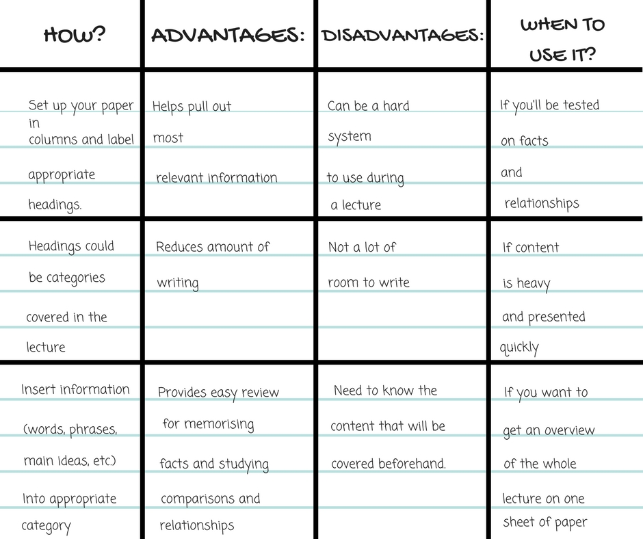

This method uses charts to classify information within rows and columns. Although it cannot be used in a lot of circumstances, it is extremely efficient when it can be used. It is best suited for subjects with statistics and fact-based information
Although, it should not be used for live lectures on topics that are very detailed, and information based. It is also not well-suited for equation-based topics such as physics, math, or chemistry.